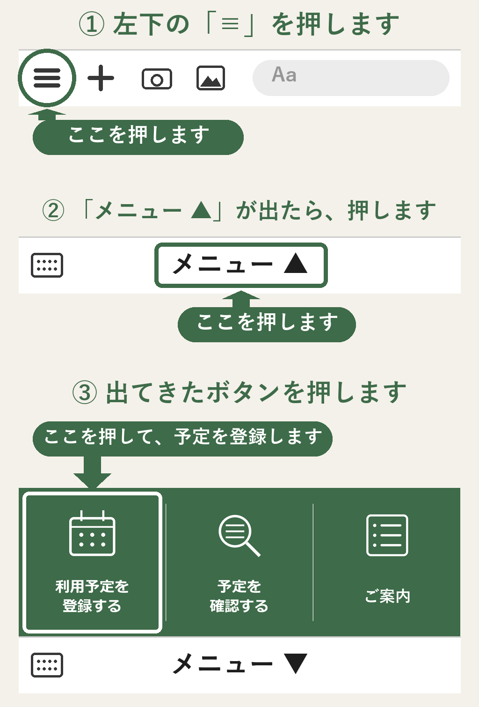

読み込み中...
冬休みのご案内
この画面を閉じる
災害時対応
この画面を閉じる
ご案内
この画面を閉じる
お子さんの登録
下のお名前で、
登録します。
お子さんのお名前
先に、友だち追加をお願いします
追加すると、
保護者連絡のトークに、
登録のご案内が届きます。
友だち追加する
もう一度、確認する
✓ 友だち追加を確認しました
登録する
登録しています。
そのままお待ちください。
✓ 登録できました
次は、
保護者連絡のトークを開いて、
下のメニューから、
予定を登録します。
メニューが見えない時。

保護者連絡のトークを開く
施設から、リンクやQRが届いている方へ
この画面を閉じて、
届いたリンクを、
もう一度押してください。
お名前を入れなくても、
登録できます。
届いていない方は、
下から、そのまま
登録できます。
最初の1回だけ、お願いします。
お名前だけで登録できます。
お迎えの設定や時刻は、
このあと、予定の登録画面で
決められます。
① お子さんのお名前(フルネーム)
＋ きょうだいを追加
登録する
この内容で登録します。よろしいですか？
戻って直す
登録する
登録しています。そのままお待ちください。
利用予定を登録する
予定の変更・キャンセルは、
3日前までにお願いします。
（例）金曜の利用は火曜まで、
月曜の利用は前の週の金曜まで。
3日以内の変更は、
トークでご連絡下さい。
確認の上ご返答差し上げます
予定を登録するお子さん
全員まとめてを選び、②の詳細入力で個別変更する事もできます。
①
日にちをタップして選択
（選択後②で詳細入力）
‹
›
日
月
火
水
木
金
土
便利機能
契約の曜日を自動で予約
契約している曜日を、
毎月、来月分の予定として
自動で入れます。
お休みの日は、
その日の予定を
取り消してください。
月謝で通える回数は、
契約した曜日で
決まります。
契約の曜日以外に
通う日は、
日にちを選んで
登録してください。
月の上限より
多く通った時は、
貯まっている振替を
使います。
振替がない時は、
超過料金になります。
上限より少なかった分は、
振替として
貯まります。
お迎え・時刻は、
「いつもの時間」の設定が
入ります。
休園日・祝日・長期休みの日は、
自動では入りません。
この設定で 保存する
②
日ごとの詳細入力
便利機能
いつもの時間を登録
お迎え・利用時間を登録しておくと
日ごとに入力する手間を省けます。
登録後も日ごとの詳細入力で
個別に変更もできます。
ふだんのお迎え
お迎え必要
お迎え不要
お迎えの場所
玄関
子ども教室
お迎えが必要な日の時刻
下校の時刻
帰りの時刻
お迎えが不要な日の時刻
来所の時刻
帰りの時刻
長期休みの日の時刻
来所の時刻
帰りの時刻
来所・帰りの時刻
来所の時刻
帰りの時刻
いつもの時間の設定を、とじる
③
登録内容を確認する
ボタンを押す
画面の版: 11/17-zi
この内容で送ります。よろしいですか？
戻って直す
この内容で
送信する
✓ 送信しました